Problem Statement: Waking Up On Time
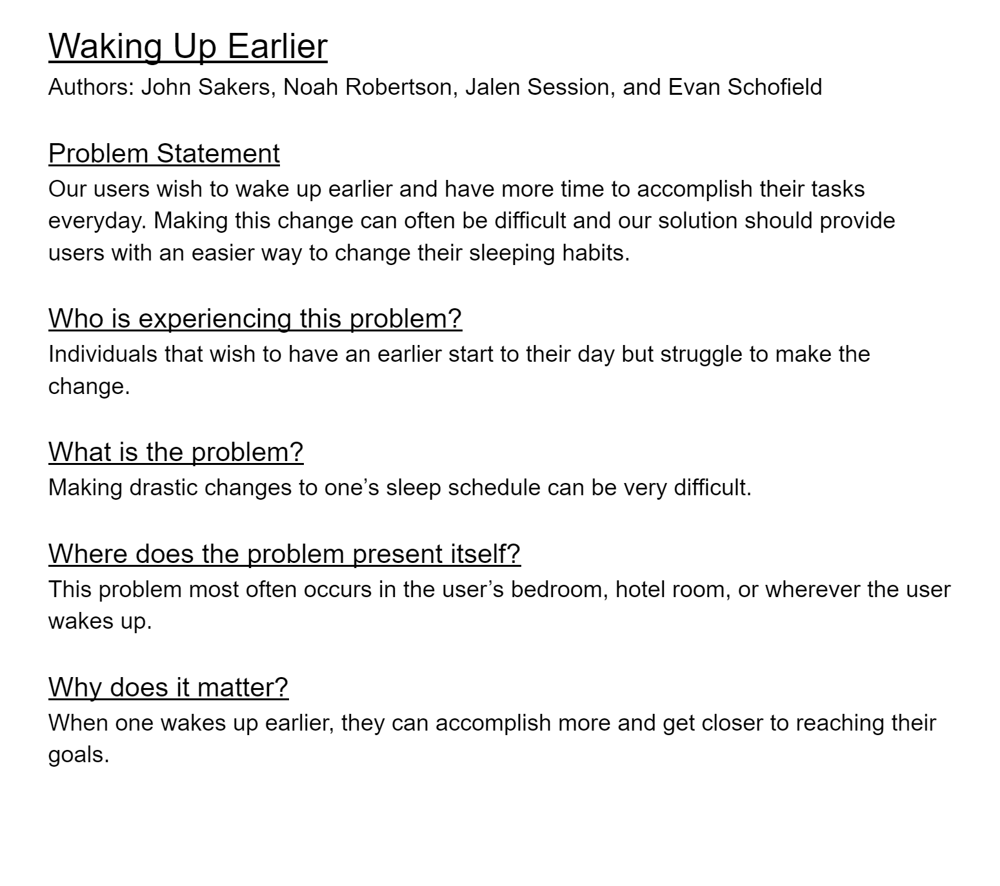Our users wish to wake up earlier and have more time to accomplish their tasks everyday. Making this change can often be difficult and our solution should provide users with an easier way to change their sleeping habits.
Affinity Diagram: Waking Up On Time
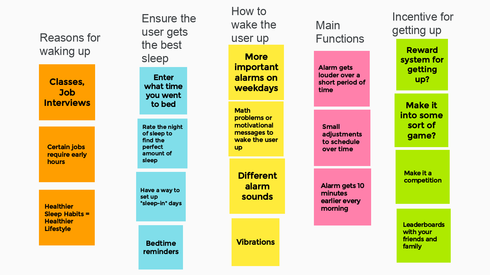 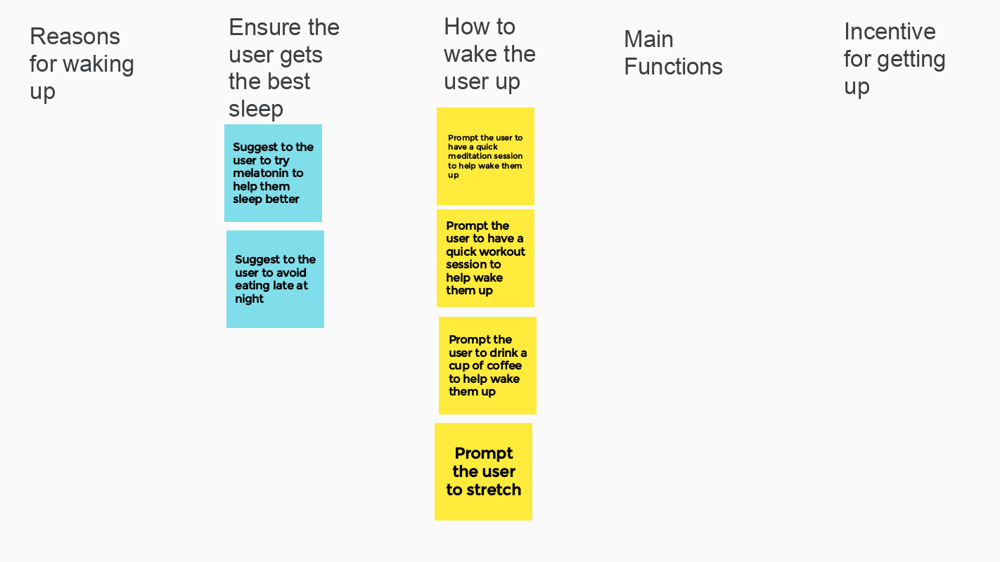
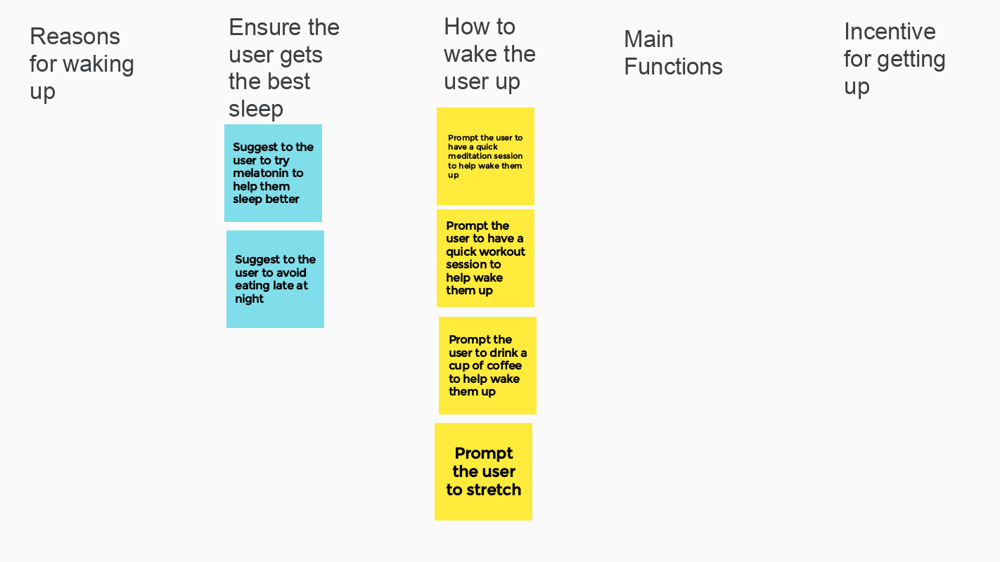
My group and I worked together to come up with ideas about ways to make our app have more and better features.
Persona: Personas of Users of our App
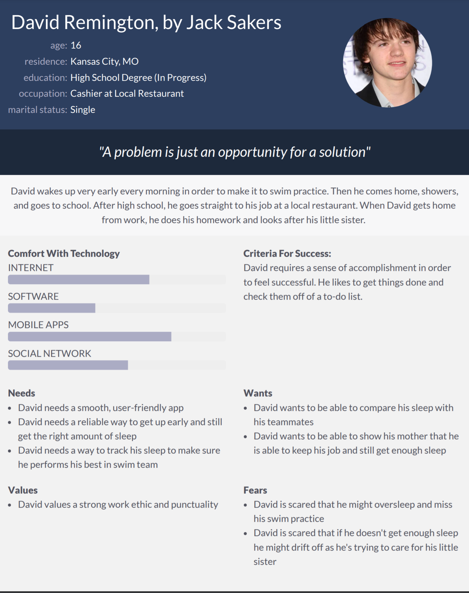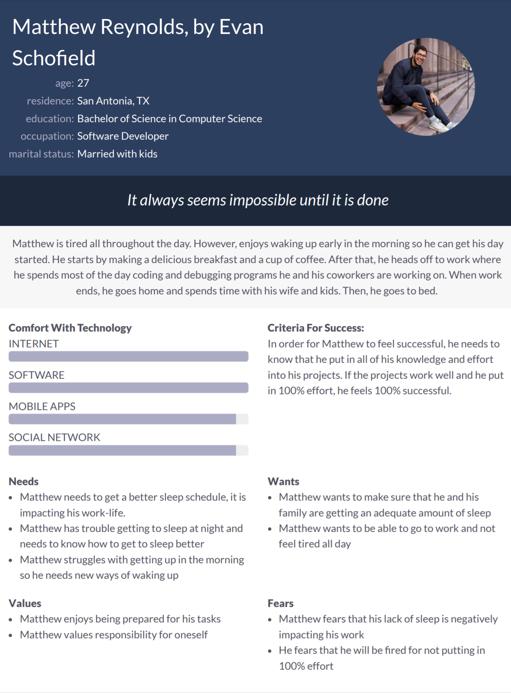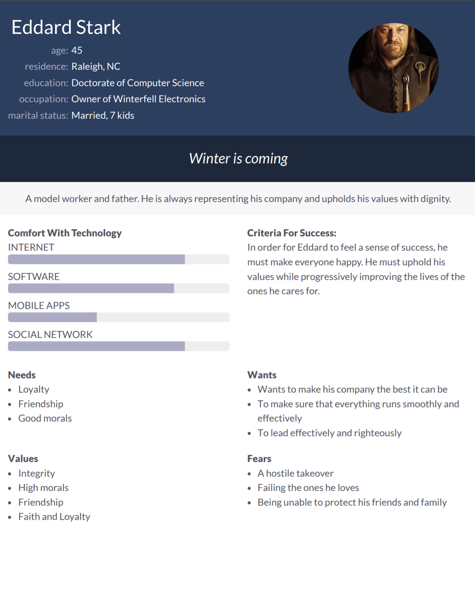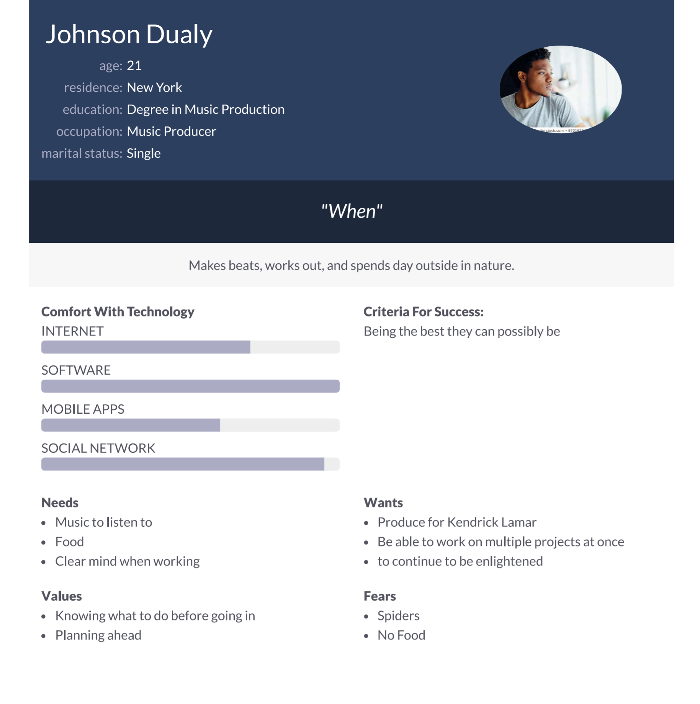Personas of a few typical users of our alarm clock app.
Storyboard: Storyboards of Users of our App.
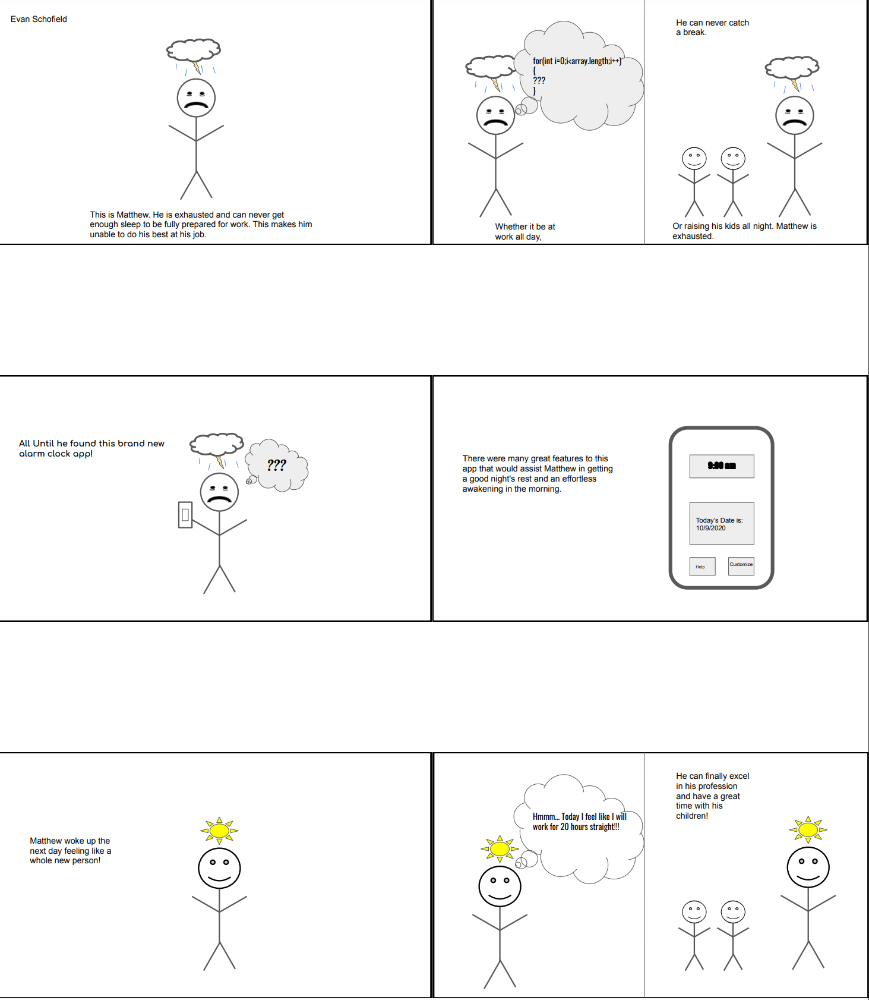A few comic strips illustrating the needs for an alarm clock app
Sketches: Alarm Clock App
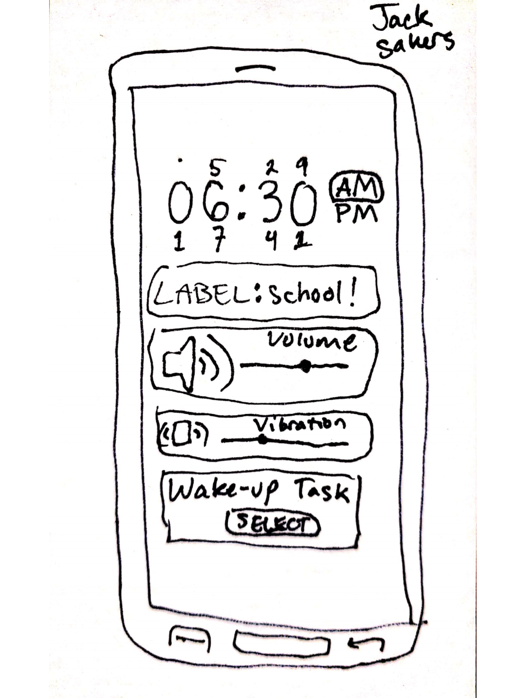A few sketches of potential app solutions for alarm clcok application
Paper Prototype: Alarm Clock App

A functional prototype on paper of our alarm clock application which we can use to ideate
Usability Testing: Alarm Clock App
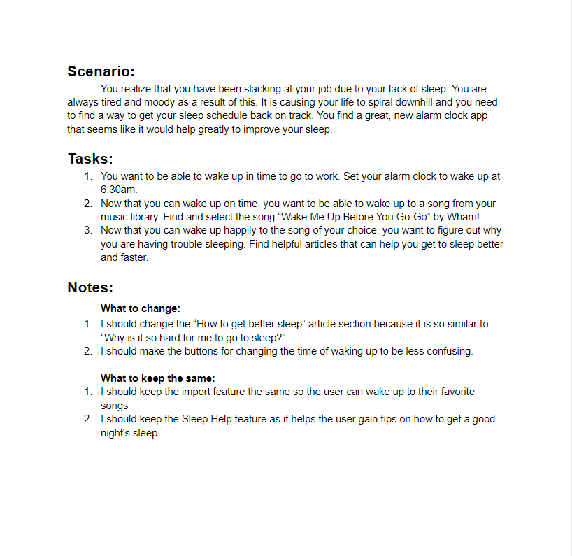A scenario, tasks, and outcome of the usability tests.
Low-Fi Prototype: Alarm Clock App
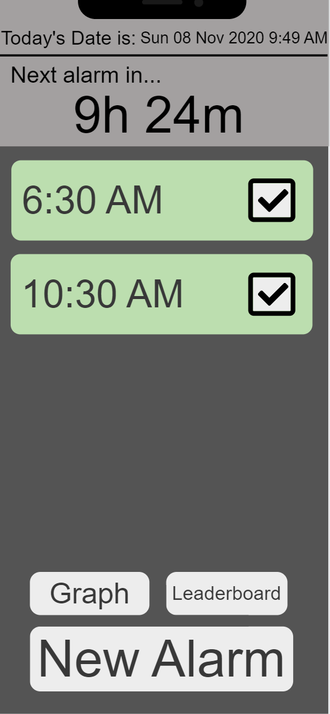A low fidelity prototype of our alarm clock app.
High-Fi Prototype: Alarm Clock App
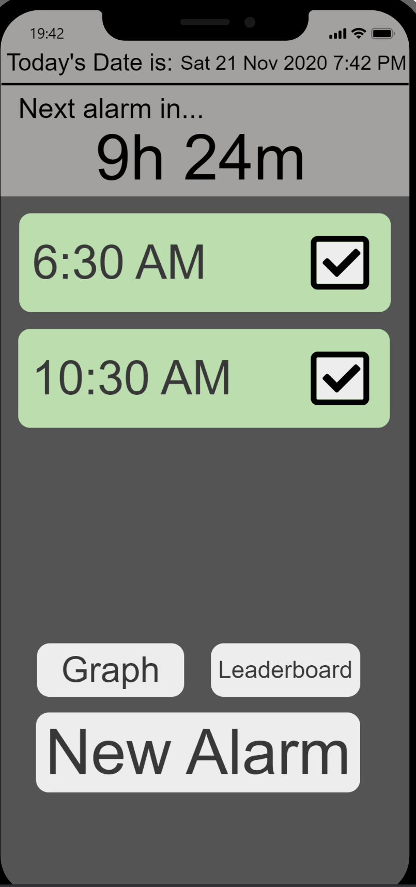A high fidelity prototype of our alarm clock app.
Final Presentation: Alarm Clock App
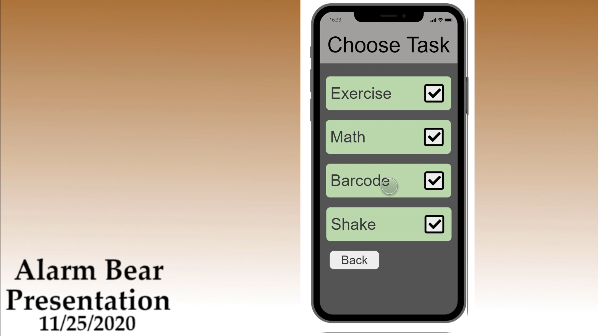Final presentation of our alarm clock app.